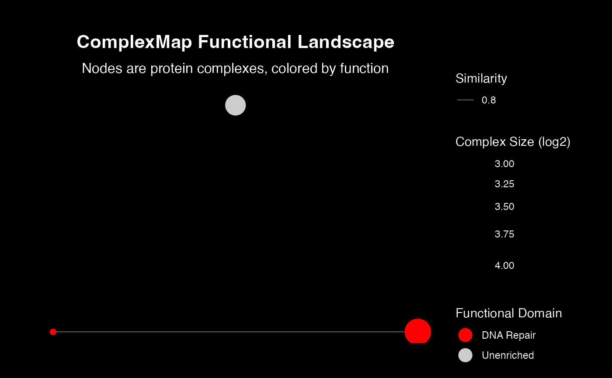

Creates a static visualization of the complex network using `ggraph`, where functional domains are represented by a discrete color scale in a legend.
Usage
visualizeMapWithLegend(
layoutDf,
edgesDf,
title = "ComplexMap Functional Landscape",
subtitle = "Nodes are protein complexes, colored by function",
bgColor = "black",
edgeColor = "white",
nodeSizeRange = c(2, 10),
unenrichedColor = "#CCCCCC",
fontFamily = "sans",
verbose = TRUE
)Arguments
- layoutDf
A data frame containing node attributes and layout coordinates, typically from `computeMapTopology`.
- edgesDf
A data frame containing the network edges.
- title
The main title for the plot.
- subtitle
The subtitle for the plot.
- bgColor
The background color of the plot.
- edgeColor
The color of the network edges.
- nodeSizeRange
A numeric vector of length 2 specifying the min and max node size.
- unenrichedColor
The color for nodes in the "Unenriched" category.
- fontFamily
The base font family for all plot text.
- verbose
A logical value indicating whether to print progress messages.
Details
This plot is useful for overviews where direct labels would be too cluttered. It maps the `primaryFunctionalDomain` to node color and displays a legend. It uses the pre-computed layout from `computeMapTopology`.
Examples
# --- Sample Data ---
nodes <- tibble::tibble(
complexId = c("C1", "C2", "C3"), x = c(1, 2, 1.5), y = c(1, 1, 2),
primaryFunctionalDomain = c("DNA Repair", "DNA Repair", "Unenriched"),
sizeMapping = c(3, 4, 3.5), colorHex = c("#FF0000", "#FF0000", "#CCCCCC")
)
edges <- tibble::tibble(
source_complex_id = "C1", target_complex_id = "C2", weight = 0.8
)
# --- Generate Plot ---
visualizeMapWithLegend(nodes, edges)
#> Visualizing ComplexMap with a color legend...
